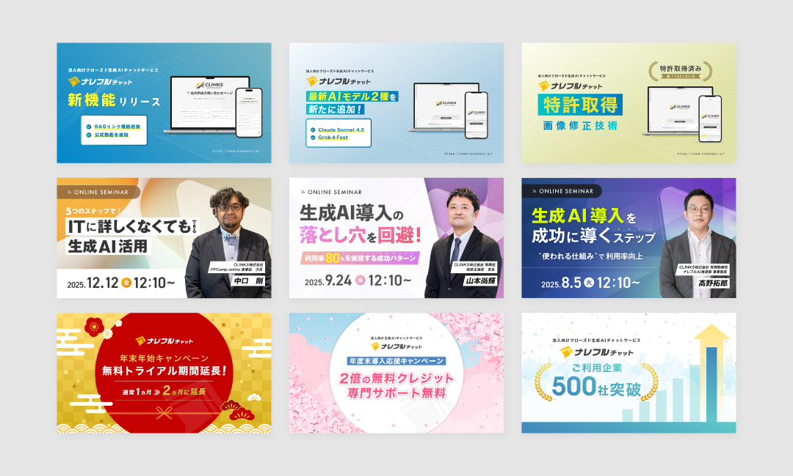

GRAPHIC
プレスリリース・コラム キービジュアル

プロジェクトの概要
プレスリリースおよびコラム記事におけるキービジュアルの制作を担当。プロダクトやセミナーに関するプレスリリースでは、ブランドイメージの統一を目的にビジュアルトーンを設計し、コラムでは記事内容に応じてビジュアルを最適化しつつ、開発系など特定ジャンルにおいてはデザインルールを設け、シリーズとしての統一感を持たせた制作を行いました。プレスリリースは2024年から制作、コラムは2020年のオウンドメディア開始以前の外部ブログ運用から制作。
課題と解決策
プレスリリースでは案件ごとにビジュアルのトーンがばらつきやすく、コラムでは記事ごとに内容が異なるため、全体の統一感を保ちつつ内容に応じた表現が求められました。あわせて、更新頻度が高くスピードが求められるため、制作リソースに依存しない運用体制も課題でした。そのため、プレスリリースではカラーやレイアウトのルールを揃え、ビジュアルの統一を図りました。一方でコラムでは、共通のデザインルールをベースにしつつ、ジャンルや内容に応じて表現を調整。さらに、非デザイナーでも更新可能なようCanvaでテンプレートを設計し、スピードと品質を両立した運用体制を構築しています。
担当領域
デザイン／レイアウト設計／画像制作
使用したツール